Órbitas elípticas e as leis de Kepler
O que esta aula responde
- Que curva é uma elipse, antes de haver qualquer força
- As três leis como Kepler as deixou: descritivas, tiradas dos dados de Tycho
- Como medidas de direção viram período, distância e órbita
- Por que o planeta às vezes anda para trás no céu
- O que o laboratório pede — e a armadilha que ele evita
Kepler antes de Newton, de propósito
- Kepler publica a primeira e a segunda lei em 1609, a terceira em 1619
- Newton explica todas em 1687 — 78 anos depois
- Nesta aula ficamos do lado de cá: descrição, sem causa
- É o que um observador com um sextante e paciência consegue
Primeiro a curva, depois o céu
Três propriedades da elipse voltam na Aula 5, quando a órbita sair da gravitação: a equação polar, a relação entre os semieixos e a área.
A definição focal
Excentricidade
Periélio e afélio
A geometria da elipse
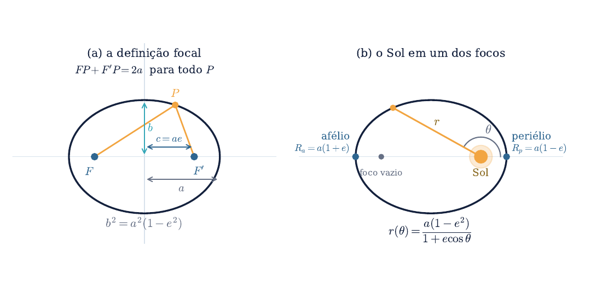
Explorar: a soma que não muda
A equação polar, em três passos
- Lei dos cossenos no triângulo dos dois focos e o planeta
- O ângulo em F, o foco ocupado, vale 180° − θ
- A definição focal fornece a segunda equação: r₁ = 2a − r
- O termo r² cancela; divide-se por 4a
A equação polar da elipse
O semieixo menor
E a forma familiar
A área
As três leis, como Kepler as enunciou
I — órbitas. A órbita de um planeta é uma elipse com o Sol em um dos focos.
II — áreas. A reta que une o planeta ao Sol varre áreas iguais em tempos iguais.
III — harmônica. O quadrado do período é proporcional ao cubo do semieixo maior.
A lei das áreas, em símbolos
Explorar: áreas iguais, ângulos diferentes
A lei harmônica
As leis de Kepler
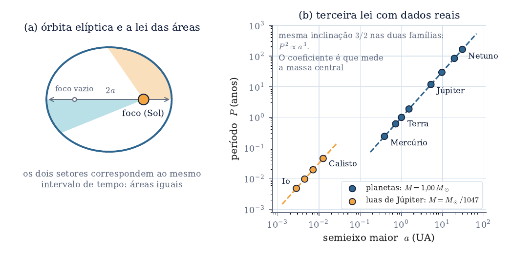
A terceira lei nos oito planetas
| Planeta | a (UA) | P (anos) | a³ | P² |
|---|---|---|---|---|
| Mercúrio | 0,387 | 0,241 | 0,058 | 0,058 |
| Vênus | 0,723 | 0,615 | 0,378 | 0,378 |
| Terra | 1,000 | 1,000 | 1,000 | 1,000 |
| Marte | 1,524 | 1,881 | 3,537 | 3,538 |
| Júpiter | 5,203 | 11,863 | 140,8 | 140,7 |
| Saturno | 9,537 | 29,447 | 867,4 | 867,2 |
Explorar: a corrida
Júpiter e suas luas: a mesma lei, outro centro

Do céu observado à órbita
O laboratório não entrega a órbita vista de cima. Entrega direções — que é o que um observador de fato tem.
A partir daqui: como converter ângulos em período, em distância e em arquitetura orbital.
Três tipos de grandeza, e não se misturam
- Eclípticas (λ, β): boas para a dinâmica orbital
- Equatoriais (α, δ): boas para catálogos e telescópios
- Horizontais (A, h): dependem do lugar, da hora e da latitude
A altura, já deduzida no Capítulo 1
Elongação solar
Movimento direto e retrógrado
O laço retrógrado de Marte
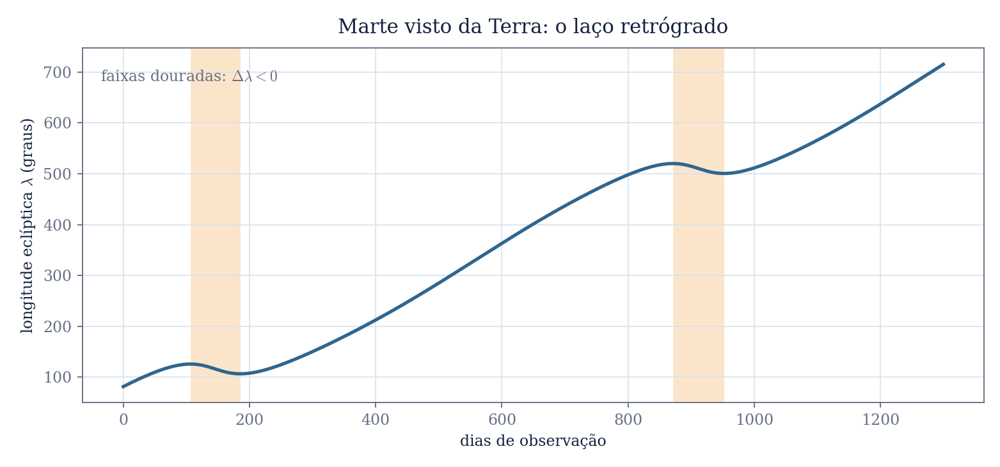
Período sinódico e período sideral
Um aviso que o roteiro leva a sério
- A inversão é mal condicionada quando S se aproxima de um ano
- Saturno: S ≃ 378 dias, e um dia de erro desloca P em 7%
- Júpiter: 2,6%. Marte: 0,1%
- A saída é a média de dezenas de oposições — e aí os três fecham dentro de 0,1%
Maior elongação: a órbita de um planeta interno
Mas a excentricidade espalha as máximas
As elongações máximas, medidas
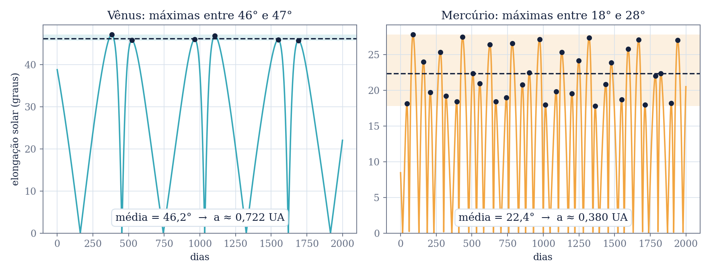
Explorar: elongação, as duas vistas
O laboratório
Você trabalha como um observador pré-telescópico: o painel mostra posições aparentes — longitude e latitude eclípticas, ascensão reta, declinação, altura e elongação.
A tarefa é construir, só com esses ângulos, a evidência que levou às leis de Kepler.
Os sete experimentos
- Caderno de Marte: λ(t), direto e retrógrado
- Período sinódico e sideral, pela média de várias oposições
- O teste da terceira lei, com Mercúrio e Vênus
- Maior elongação e o efeito da excentricidade
- Aplicar a lei aos externos — e notar que ali ela é usada, não testada
- Opcional: triangular Marte como Kepler fez
- Altura, ascensão reta e janela observacional
A armadilha que o roteiro evita
Se você obtém a de P por a = P2/3 e depois calcula P²/a³…
inclusive para um planeta inventado. Um teste que não pode falhar não é um teste.
O que torna o teste um teste
O resultado
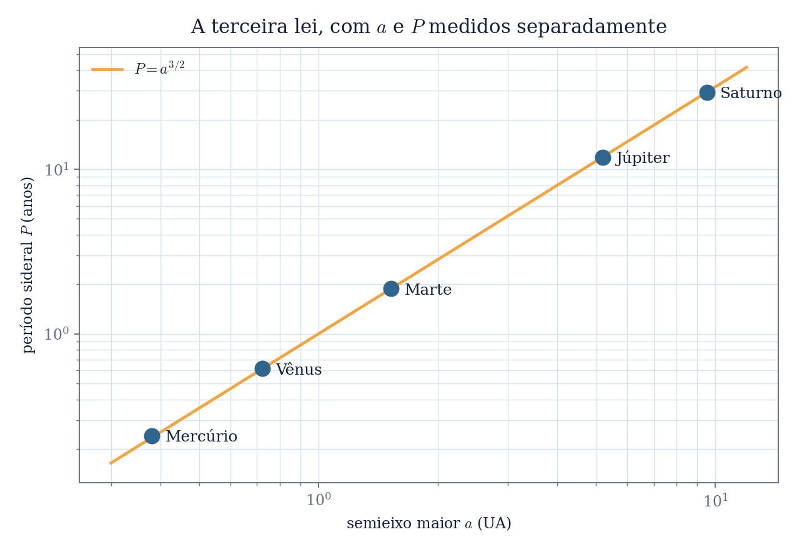
Como o painel está organizado
- Observação — o mapa do céu, o planeta escolhido, e os controles: data, hora sideral e latitude
- Inferência de Kepler — os gráficos de λ(t) e de elongação, que se preenchem com o que você registrou
- Caderno de dados — a tabela das observações, com todas as colunas
- Template de Relatório — gera o artigo em LaTeX com os seus dados
Passo a passo: montar o caderno
- Escolha o planeta no seletor
- Ponha a data no dia 0
- Clique em Registrar observação
- Avance a data de 20 a 30 dias
- Registre de novo — e repita
- Três anos de Marte pedem umas 40 entradas
- Confira na aba Caderno de dados
- Exporte o CSV antes de fechar a página
Passo a passo: os números que a entrega pede
- Oposições: avance a data e observe a coluna de elongação passar perto de 180°
- Anote a data de cada uma — quanto mais, melhor
- Tire a média dos intervalos: esse é S
- Para externo, 1/P = 1 − 1/S
- Internos: registre elongações em muitas datas
- Colecione todas as máximas locais
- a ≃ sen(média delas)
- Só então calcule P²/a³
O artigo sai pronto do painel
Na aba Template de Relatório, escreva os nomes do grupo — até três — e clique em Gerar template. O laboratório salva:
- main.tex no modelo de artigo da disciplina, com o resumo já apontando quantas observações você registrou
- as figuras do céu, de λ(t) e da elongação
- a tabela das observações e a do teste da terceira lei
- o CSV do caderno e o logotipo
O que entregar — e o que custa nota
- O caderno exportado e o gráfico λ(t) de Marte, com os intervalos retrógrados marcados
- S e P de um externo, declarando quantas oposições entraram na média
- A tabela do teste para Mercúrio e Vênus, deixando claro que a e P são independentes
- A previsão de a para os externos, dita como previsão
O que fica do Capítulo 4
- A elipse é geometria: focos, excentricidade, e três propriedades que a Aula 5 vai usar
- As três leis descrevem as órbitas sem explicar nenhuma — e isso é uma etapa legítima da física
- Ângulos medidos do chão bastam para extrair período, raio orbital e a arquitetura do Sistema Solar
- Medir independentemente é o que separa um teste de uma tautologia